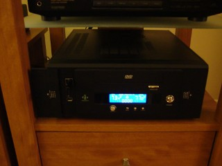
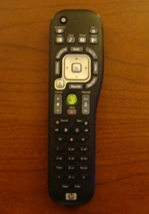

Over the past few weekends I have worked to get our aging HTPC back into action. The only monetary investment that was made was a $40 video card. After purchasing a new Geforce 210 to replace a 7100GS and moving over some memory from a now defunct workstation, the new machine was a little more formidable:
- AMD Sempron 2800+ (1.6GHz, S754)
- Nvidia GeForce 210
- 2GB (2x1GB) DDR2-800
It's connected to a 32" Sony Bravia through a D-SUB cable since it appears that the HDMI pass-through on the Geforce 210's is not properly working yet in Linux. All of the hardware resides in an old nmediapc case that's now discontinued.

I purchased the Geforce 210 for a specific reason: VDPAU. VDPAU allows for the offloading of intensive calculations associated with playing videos and has grown to be quite encompassing over the past year. I was keen to see if VDPAU was as effective as some benchmarks had indicated and I thought that testing it with a painfully aged budget processor would reveal just how useful VDPAU is.
Setting up VDPAU wasn't difficult thanks to the VDPAU team PPA. I formatted the HTPC and installed Ubuntu 9.10, downloaded the required drivers using the PPA and installed the builds of Mplayer and SMplayer. VDPAU worked without many quarrels and preliminary tests showed the processor never breaching 10% with 720p x264 encoded files. These results were very impressive, but I would later find even more staggering results. One issue that had to be dealt with was some vicious tearing. To remove this, you must setup your xorg.conf to disable the composite extension entirely. The easiest way to do this is:
sudo nvidia-xconfig --no-composite
After disabling the composite extension and restarting the X server the tearing was gone. Now, at the time, I felt very content with myself. I had spent $40 to upgrade a nearly four year old HTPC and managed to coax it into playing extremely high bitrate and processing intensive HD x264 files. The extra memory helped improve the boot time tremendously. I thought that I was done until this accessory showed up courtesy of my father (apparently they have over half a dozen of them lying around where he works):

This led me to battle the beast known as LIRC which provides for the use of IR devices (in my case the receiver and the remote). The documentation for LIRC and the available resources appear very esoteric and somewhere between confusing and misleading. I ended up finding the best resource (albeit a very out of date one) on the MythTV Wiki). Microsoft IR remotes (my model is TSGH-IR01) are very well supported through LIRC and it was easy enough to follow the directions on the wiki page to get the operating system to recognize key presses. I then used a package to generate the key mapping files:
sudo apt-get install mythbuntu-lirc-generator mythbuntu-lirc-generator
This got me some basic functionality in VLC and MPlayer. At this point, I began to fantasize of removing the need to use the wireless keyboard and using my fancy IR remote instead. After finding that newer builds of XBMC support VDPAU, I decided to take the plunge and spend the day installing and configuring XBMC. I got the builds from the Team XBMC PPA. XBMC worked nearly flawlessly and interfaced with the MCE remote very well. I begin to feel like it may be possible to operate the machine entirely without a keyboard, but there were quite a few hurdles in the way.
First, I had to add a new xsession config for XBMC (make sure it's with the --standalone option or else it cannot automount USB devices) and enable auto login. This made for a very speedy boot process that dropped the user directly in XBMC where they could easily use the remote to navigate and control playback. Second, there is a very visually displeasing bug with the new xsplash system in 9.10 that causes an Ubuntu loading box to appear and remain over the XBMC interface for what feels like an eternity. To fix this issue:
if [ -x '/usr/bin/xsplash' ]; then /usr/bin/xsplash --gdm-session --daemon fi
Must be removed or commented out from both /etc/gdm/Init/Default and /etc/gdm/PreSession/Default. Thanks to Freek on the XBMC forums for posting this solution.
The two other primary issues involve DVD playback and the mounting of large USB hard disks. The DVD drive issue is ongoing and I believe that the IDE channel on the motherboard may be dying. After trying three PATA DVD drives and each of them exhibiting issues with playback, I think it may be time to spend $20 on a SATA optical drive. The most difficult problem to solve involved the automatic mounting of USB hard disks. Smaller USB flash drives work fine, but large USB hard disks did not automatically mount in XBMC. After toiling for an hour, I found that a script written by andyblac on the XBMC forums has the ability to which fix this issue. Some disks still appear to not work correctly, though. Mileage may vary, I suppose.
At this point I was feeling pretty content with myself. Clearly, I had breathed new life into this aging HTPC with minimal monetary investment. I added a special XBMC usplash to complete the look and configured a lot of the internal XBMC options to round out the rough edges. The interface and the remote work amazingly well together. As a final test, I decided to use what's known as the "Killa Sample" (torrent, rapidshare) which is an amazing scene from Planet Earth. This sample clocks in at an average of 33.1Mbps @ full 1080p and brought my workstation to its knees (it rendered grey and green blocks) using normal xVideo video output with an Intel C2D E6750 (2.66GHz). Much to my amazement, the 1.6GHz Sempron and GeForce 210 with VDPAU handled the file with no issues. We watched stunned as the file played smoothly.
In conclusion, VDPAU lives up to and beyond the hype it receives. For an HTPC, XBMC is a very user-friendly option that required some minimal tweaking. For an HTPC that has no tuner card I think XBMC is the clear choice over MythTV.